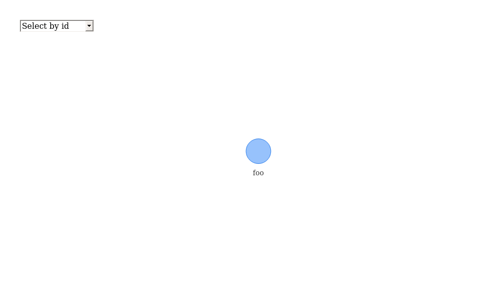

Boilerplate for ‘tidylab’ Packages

Overview
Using this template reduces:
* Unnecessary variance between packages configurations; and
* Development time spent on making a barebone package working for the first time.
This is possible as the template comes with:
* Fully configured test-suite, including code-coverage; and
* Fully configured continuous-integration (CI) script for Travis.
Useage
- Create a new repo on GitHub.
- Use the
git-flowapproach in your development cycle. - Create a new release named
inception. - Copy
template.packagecontent to the new reposetory. - Change the
template.package.Rprojfile to<package-name>.Rproj. - Open the
DESCRIPTIONfile, and edit the following fields: -
Package modify the package name while using the
tidylab.prefix. - Title modify the package title; use uppercase words with no period (‘.’).
- URL modify the package URL such that it leads to its GitHub repo.
- BugReports edit the URL such that it leads to the package issue page.
- Description modify the package decription.
- In
README.Rmddelete the Useage Section. - Render
README.Rmdby clicking the Knit button. - Push changed on the
inceptionbranch. - Go to Travis website, add the project and enable its integration.
- Decide if you would need binder – an RStudio Server that lets you demonstrate the package. If you do then:
- Uncomment build-binder under .travis.yml; and
- Uncomment Launch Rstudio Binder from README.Rmd.
Function Dependencies
## checking for file ‘/tmp/RtmpWqUgSN/remotes2e3570096401/datastorm-open-DependenciesGraphs-3c33e2a/DESCRIPTION’ ... ✔ checking for file ‘/tmp/RtmpWqUgSN/remotes2e3570096401/datastorm-open-DependenciesGraphs-3c33e2a/DESCRIPTION’
## ─ preparing ‘DependenciesGraphs’:
## checking DESCRIPTION meta-information ... ✔ checking DESCRIPTION meta-information
## ─ checking for LF line-endings in source and make files and shell scripts
## ─ checking for empty or unneeded directories
## ─ building ‘DependenciesGraphs_0.3.tar.gz’
##
## 